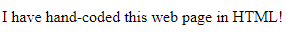
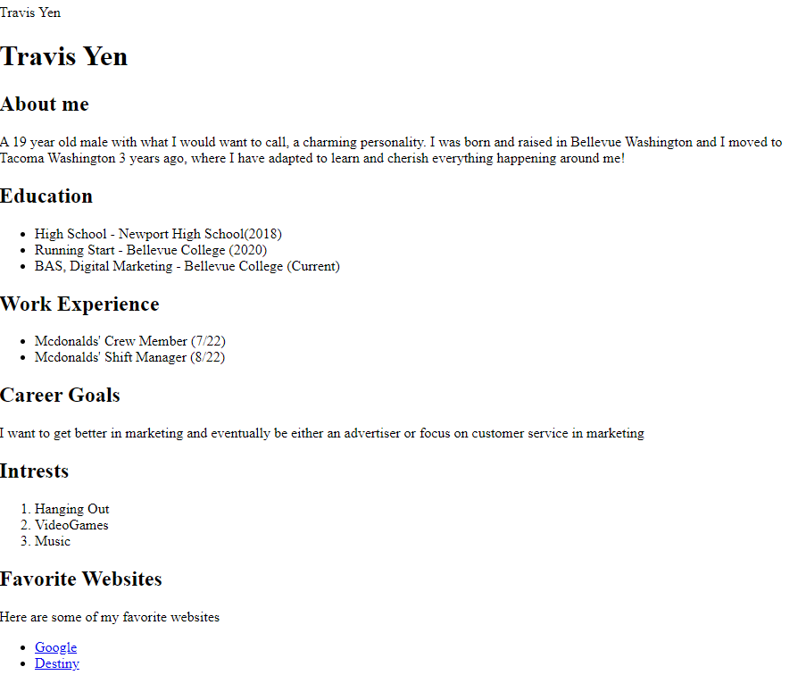
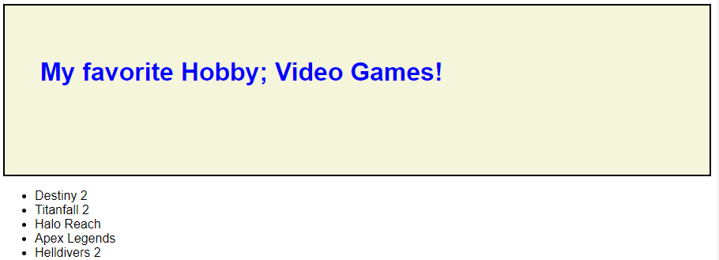
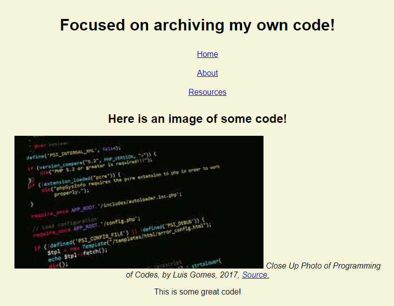
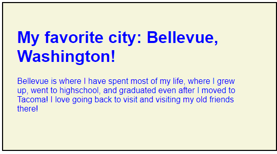
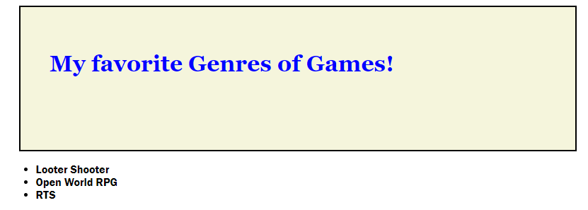

Here is my first lab!

This lab is my first html page I made!
Here is my first project, The resume!

This project is the first project, where I used lists and was able to link other sites!
Here is second project, My favorite Hobbies!

This project, I learned how to display an image in a html file, and source them!
Here is my third lab, and yes we skipped a number! No lab two!

This lab, I learned how to make multiple pages, and how to connect them!!
Here is my third project, My favorite city, which is the one I was born and raised!

This project is where I learned how to do paddings, floats and many visual elements to spice up my coding!
Here is my 5th project, and we skipped 4!

This project was where I learned how to embed videos into my html files!